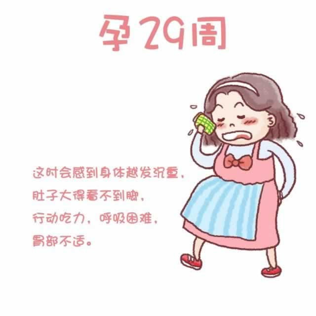

现在，子宫已上升到横膈膜，在肚脐上方约10厘米的位置。因为身体越发沉重，你时常感觉很累，行动也更加吃力了。因为肚子很大，在走路时你甚至看不到自己的脚趾。躺下后再起身时，也不会像过去那样轻快了。直至分娩，你在下楼、走路时都要十分小心，注意动作幅度不要太大，更不要做那些需要爬上爬下的家务事，以免受伤。
进入孕晚期后，多数准妈妈会有白带增多的情况，如果护理不当可能会引起阴道炎和外阴炎。炎症除了影响到准妈妈自身的健康，也有可能感染到即将出生的宝宝。因此，你要特别注意保持外阴清洁。一旦出现瘙痒、白带增多或颜色或气味有变化时，要及时就医。
身体的不适加之对即将到来的分娩的担心，最近你仿佛再次经历怀孕早期的情绪波动——抑郁、焦虑、烦躁，甚感无助。据不完全统计，约10%的准妈妈在孕晚期时会出现不同程度的抑郁，向丈夫、朋友或和医生倾诉你的苦恼和担忧吧，他们的开导一定会帮助你从这些负面情绪中渐渐地走出来。